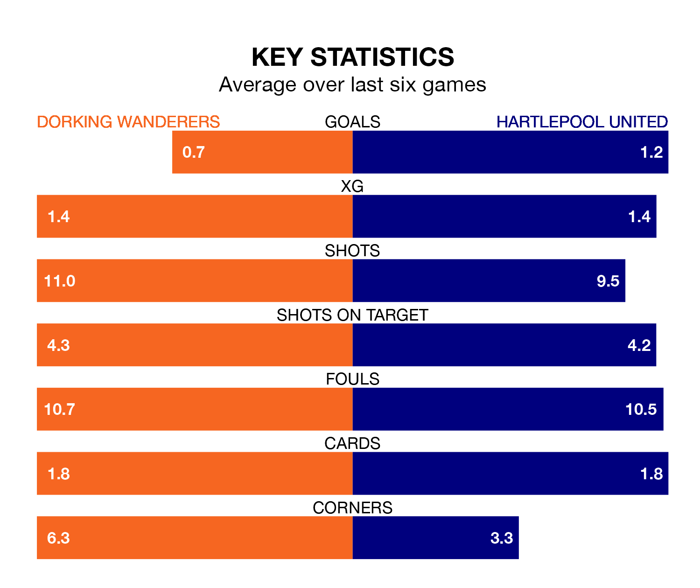

Dorking Wanderers face Hartlepool United at the Meadowbank Stadium on Saturday lunchtime looking to secure a first win in 11 National League games.
Wanderers have lost six and drawn four matches since they last earned three points – against Chesterfield on March 2.
They face a Hartlepool side who have won two and drawn four over that time.
Dorking are 23rd in the table after 45 games, of which they have won 12 and drawn nine, earning 45 points.
Hartlepool are 10 places ahead of Wanderers in 13th, with 16 wins and nine draws putting them on 57 points.
With 51 goals in 45 games so far this season, the hosts are the league's third-lowest scorers with 1.1 goals per game. And they are conceding more than average, letting in 81 goals at a rate of 1.8 per game.
United, meanwhile, are average scorers, with 1.5 goals per game. They have conceded 1.8 goals per game.
Dorking's last match was on Saturday, a 1-1 draw against Rochdale, with Charlie Carter getting the goal for Wanderers.
Hartlepool drew 1-1 with Dagenham and Redbridge last time out, also on Saturday, with Joe Grey on the scoresheet.
Updated: 11:31 (UTC), 15/04/24